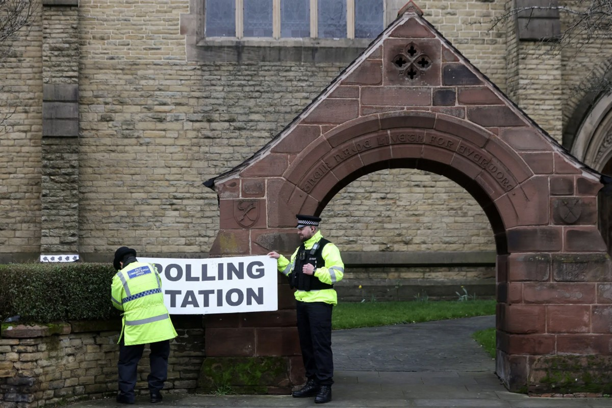

Hannah Spencer, the Green Party candidate, outside a polling station on Thursday, the day of the Gorton and Denton by-election.Credit...Temilade Adelaja/Reuters
ON SOURCE: NEW YORK TIMES
Green Party Defeats Labour in U.K. Special Election, in Blow to Starmer
The result marks the first time the Greens have won a British parliamentary by-election and signals the frustration of left-leaning voters with Prime Minister Keir Starmer.
Listen to this article · 5:36 min Learn more
Reporting from London
Published Feb. 26, 2026Updated Feb. 27, 2026, 12:41 a.m. ET
The Green Party won a special election on Thursday for a British parliamentary seat near Manchester, England, where left-leaning voters sent Prime Minister Keir Starmer a searing message of dissatisfaction, demanding a more progressive government.
Hannah Spencer, 34, a plumber by trade and a member of the area’s local council, won the seat in a district called Gorton and Denton, outside of Manchester, England, with 14,980 votes, or about 41 percent of the vote, according to results announced early on Friday morning.
Mr. Starmer’s Labour Party came in third, behind Reform U.K., a right-wing populist party that campaigns against immigration. It was a remarkable setback for Labour, which had represented the local area for generations.
Reform received 10,578 votes, or about 29 percent. Labour received 9,364 votes, or about 25 percent.
In a brief victory speech just after 4:30 a.m. local time, Ms. Spencer credited her decisive win to her focus on cost of living issues, inequality and the environment. And she chided — without naming them — politicians who attempted to divide people along race and ethnic lines.
“I can’t and won’t accept this victory tonight without calling out the politicians and divisive figures who constantly scapegoat and blame our communities for all the problems in society,” she said. “My Muslim friends and neighbors are just like me — human.”
Mr. Starmer had argued that only Labour was positioned to stop the rise of Reform, which has led national polls consistently for almost a year. In Parliament on Wednesday, Mr. Starmer said that “anybody who wants to stand against that hatred and division should vote Labour.”
But many left-leaning voters appeared to have ignored that appeal and instead given their support to Ms. Spencer, a charismatic candidate who brought social media savvy and energy to the Green campaign.
Reform’s second-place finish was a boost to Nigel Farage, an ally of President Trump who has turned the insurgent party into a powerful force in British politics. The Conservative Party, which governed Britain for 14 years before Mr. Starmer became prime minister, did not mount a serious challenge on Thursday.
Ms. Spencer’s victory, buoyed by progressive and Muslim voters in the area who called for greater support for Palestinians in Gaza, was a blow to Mr. Starmer. His sagging popularity is seen by many members of his party as a drag on Labour’s ability to win re-election.

Police officers adjust a polling station signage outside St. Peter’s Church, near Manchester on Thursday.Credit...Temilade Adelaja/ReutersThe result matters for Mr. Starmer’s party because the communities of Gorton and Denton, southeast of Manchester, have been Labour strongholds for decades. Filled with a mixture of working-class voters, students and university graduates, and home to a large ethnic-minority population, they are the kind of places that helped make him prime minister.
Mr. Starmer entered Downing Street in the summer of 2024, after the Labour Party ousted the Conservatives in a landslide election. The next general election does not have to take place until 2029.
Special elections in Britain, as in the United States, often draw few voters. And because of the country’s “first past the post” system, whoever gets the most votes wins, even if they are far from a majority of the ballots cast.
With just one seat up for grabs, such votes rarely change parliamentary math in a significant way. But the outcome can send shock waves through politics, destabilizing losing parties and galvanizing the winners.
Opposition parties have achieved many by-election victories over the decades by mobilizing public dissatisfaction with the government of the day. Last year, Reform snatched victory from Labour in Runcorn and Helsby, a district in the northwest of England, by just six votes. That win, along with victories in municipal elections and favorable opinion polls, helped shape a narrative that Reform was a serious political force to be reckoned with.
Failing to win can have implications, too. In May 2021, the Labour Party, then in opposition, lost in Hartlepool — a seat considered one of its strongholds in the northeast of England — to the governing Conservatives. That prompted Mr. Starmer to consider quitting as Labour leader.
Reform U.K. leader Nigel Farage (right) and candidate Matt Goodwin at the party’s campaign headquarters in Gorton and Denton. Mr. Goodwin came second, with about 29 percent of the vote.Credit...Phil Noble/Reuters
The next political test for Mr. Starmer will be large-scale elections in May, when voters will elect lawmakers to the Scottish and Welsh Parliaments and choose local council members across parts of England.
Some political observers say that Mr. Starmer’s rivals in the Labour Party are waiting until then to decide whether to challenge him for the leadership. If Labour does poorly in May, as polls suggest, Mr. Starmer could be ousted and a new Labour prime minister installed in office.
Tony Travers, a professor of politics at the London School of Economics, said Labour lawmakers have yet to settle on who might be a more successful leader if they were to push Mr. Starmer out.
Several potential challengers have so far declined to make a move, Mr. Travers said, resulting in the “lack of an immediate killer opponent who was willing to go for the job.”
He added that few people expect Labour to do well in the May 7 elections, an outcome that could galvanize frustration with Mr. Starmer inside his party.
“Even if the Archangel Gabriel were to appear to run the Labour Party between now and May the seventh,” Mr. Travers said, “they’re going to do badly in the local elections.”
Michael D. Shear is the chief U.K. correspondent for The New York Times, covering British politics and culture and diplomacy around the world.
ON SOURCE: NEW YORK TIMES